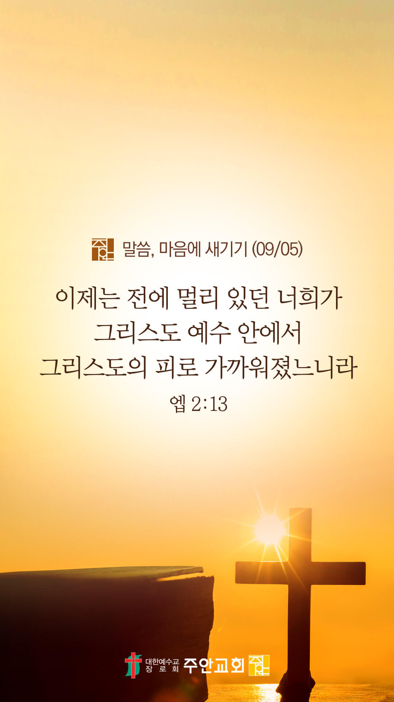

온라인 기도실 안내
2021년 09월05일(일)~09월 11일(토)
- 온라인 기도실은 온 회중이 함께 주님 앞으로 나아가는 자리입니다
- 30분 정도 여유를 가지고 하시기 바랍니다
- 말씀과 묵상, 찬양과 기도로 나아갑니다
- 배경 음악이 나올 수 있습니다 볼륨을 조절해주세요
준비가 되셨으면 아래의 버튼을 눌러주세요
할렐루야
내 영혼아 여호와를 찬양하라
시 146:1
- 가사를 묵상하며 읽습니다
주님 다시 오실 때까지
나는 이 길을 가리라
좁은문 좁은길 나의 십자가 지고
나의 가는 이길 끝에서
나는 주님을 보리라
영광의 내 주님 나를 맞아 주시리
주님 다시 오실 때까지
나는 일어나 달려가리라
할렐루야
내 영혼아 여호와를 찬양하라
시 146:1
- 가사를 묵상하며 읽습니다
주의 영광 온 땅 덮을 때
나는 일어나 노래하리
내 사모하는 주님
온 세상 구주시라
내 사모하는 주님
영광의 왕이시라
할렐루야
내 영혼아 여호와를 찬양하라
시 146:1
주님 다시 오실때까지 by 소향
위의 찬양이 끝나면 말씀읽기를 눌러주시면 됩니다
주의 말씀은 내 발에 등이요
내 길에 빛이니이다 (시119:105)
오늘의 말씀입니다
음악 소리가 크면 조절하시기 바랍니다

마음의 묵상
엡 2:13
“이제는 전에 멀리 있던 너희가 그리스도 예수 안에서 그리스도의 피로 가까워졌느니라”
1. 이전에 예수님을 멀리 했던 시절을 잠시 떠올려보세요
2. 요즘은 주님과 친밀히 교제하고 계신가요?
3. 어떻게 예수님과 가까워질 수 있다고 말씀하나요?
예수 안에서 그리스도의 피로...
회개, 삶의 방향을 바꾸는 결정
회개는 하나님 앞에서 나의 본모습을 되찾는 일입니다
“세리는 멀리 서서 감히 눈을 들어 하늘을 쳐다보지도 못하고 다만 가슴을 치며 이르되 하나님이여 불쌍히 여기소서 나는 죄인이로소이다 하였느니라”
- 누가복음 18:13 -
3분 정도 회개하며 주님 앞에 나아갑니다
사슴이 시냇물을 찾기에 갈급함 같이
시 42:1
- 다음의 말씀을 소리 내어 읽습니다
[누가복음 18장 15-17절]
15 사람들이 예수께서 만져 주심을 바라고 자기 어린 아기를 데리고 오매 제자들이 보고 꾸짖거늘
16 예수께서 그 어린 아이들을 불러 가까이 하시고 이르시되 어린 아이들이 내게 오는 것을 용납하고 금하지 말라 하나님의 나라가 이런 자의 것이니라
17 내가 진실로 너희에게 이르노니 누구든지 하나님의 나라를 어린 아이와 같이 받아들이지 않는 자는 결단코 거기 들어가지 못하리라 하시니라
하나님 나라
1. 하나님의 나라가 속히 이 땅에 임하게 하소서
하나님 아버지,
코로나19로 인해서 순직하신 23명의 한인 선교사님들과 그 외 순직하신 모든 선교사님들의 가족들을 위로하여 주소서. 그들의 생명이 한 알의
밀알이 되어 열방 가운데 복음의 열매가 맺어지게 하시고, 온 세상에 하나님의 나라가 더욱 확장되게 하소서.
간절한 마음으로 3분 정도 기도합시다
남과 북
2. 남북한이 속히 복음으로 통일되게 하소서
하나님 아버지,
북한에 90년대와 같은 끔찍한 기근이 다시 오지 않게 하시고, 굶주리고 있는 북한 주민들의 신음 소리를 들으시고 응답하여 주소서.
북한 정권이 국제 사회를 향해서 도움의 손길을 내밀게 하시고, 전 세계의 선한 손길과 복음의 손길이 임하게 하소서.
간절한 마음으로 3분 정도 기도합시다
대한민국
3. 우리나라가 하나님을 경외하는 나라가 되게 하소서
하나님 아버지,
코로나19 확산을 막아주시고 속히 종식되어 일상을 회복하게 하소서. 하나님의 뜻에 반하는 법안(건강가정기본법, 평등법 등)들이 폐기되게 하시고,
특별히 입법기관인 국회와 국회의원들이 진정 하나님을 경외하고, 국민들을 사랑하는 자들로 세워지게 하소서.
간절한 마음으로 3분 정도 기도합시다
한국교회
4. 한국교회가 성령으로 새롭게 부흥되게 하소서
하나님 아버지,
코로나19로 인해서 막혀 있는 전도의 문을 열어주소서. 한국교회가 천하보다 귀한 한 영혼을 품고 기도하며 전도하는 교회가 되게 하시고,
동시에 예수님을 따라 서로를 사랑하며 이웃을 섬기는 교회가 되어 세상 속에 하나님의 복음을 전하는 선교적 교회가 되게 하소서.
간절한 마음으로 3분 정도 기도합시다
주안교회
5. 주안교회가 다음 세대를 세우는 선교적 교회가 되게 하소서
하나님 아버지,
주안의 성도들이 지혜로운 건축자 되어, 우리의 삶의 기초를 세상의 것들(재물, 지식, 경험, 명예나 권력 등)에게 두지 않고,
오직 진리의 터이신 예수 그리스도 위에 세우게 하소서. 그리고 예수님의 말씀을 듣기만 하는 것이 아니라,
말씀을 듣고 행하여 우리의 믿음의 집을 튼튼하게 세워가는 복된 성도들이 되게 하소서.
간절한 마음으로 3분 정도 기도합시다
감사의 기도
- 오늘 기도를 인도하신 주님께 감사를 올려드립니다
- 아래의 구절을 읽고 주님께 감사의 마음을 올려드립시다
“예수께서 그에게 이르시되 보라 네 믿음이 너를 구원하였느니라”
- 누가복음 18장 42절 -
고요한 가운데 잠시 침묵하시기 바랍니다
파송, 세상을 향하여
- 오늘의 온라인 기도를 마쳤습니다
기도를 들으신 주님께서 평안히 가라 하십니다
주님께서 우리와 함께 하시니 두려울 것이 없습니다
새벽을 깨우며
- 새벽기도회 안내입니다